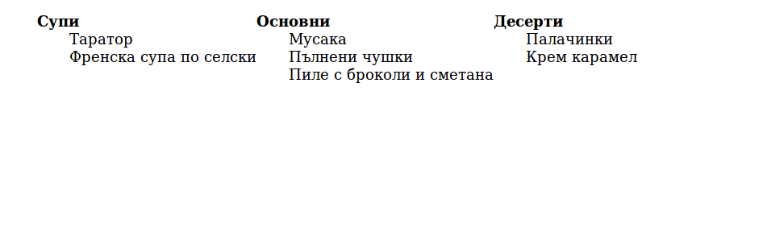

Създаване на хоризонтално меню чрез списък
Създайте нов HTML файл с име: list_as_horisontal_menu.html
В тялото копирайте списъка от задачата "Любими храни" (http://codepen.io/webdesigncourse/pen/KdGmOP).
Уверете се, че кода, който имате е валиден HTML
Сега вече можем да започнем
- За да оформим списъка като хоризонтално меню, в HTML кода трябва да добавим единствено обхващащ елемент, в който да сложим списъка. Най-добре е да използваме елемента nav
- Определено не желаем в менюто да виждаме маркерите (цифри и булети) на списък. Премахваме ги, като зададем: list-style-type: none. Използвайте селектори за наследници/деца за да сте сигурни, че ще премахнете маркерите единствено от списъка в менюто.
- За да подредим елементите на главното меню, хоризонтално един до друг, е необходимо да зададем свойството
display:inline-blockв CSS правилото за елементите на главния списък (тези с клас menu_item).
Резултатът до момента е:
 - Необходимо е